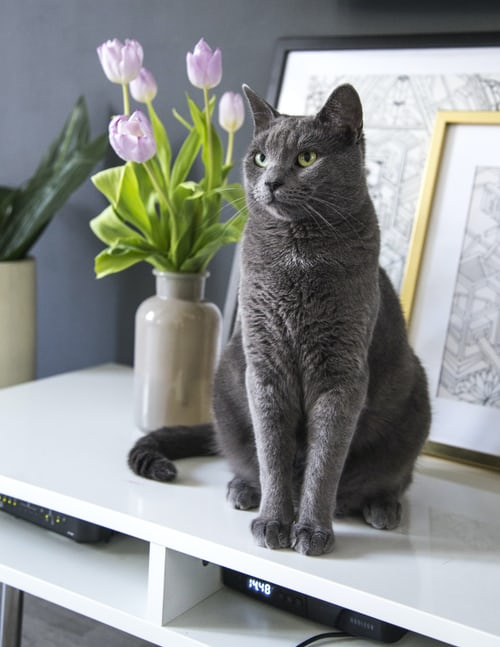

When a cat has their ears upright and facing foward it means that it's alert.

A cat's ears are pushed back when it is angry or defensive.

When a cat has their ears facing a little bit foward and slightly to the side, it means that it is happy and relaxed.